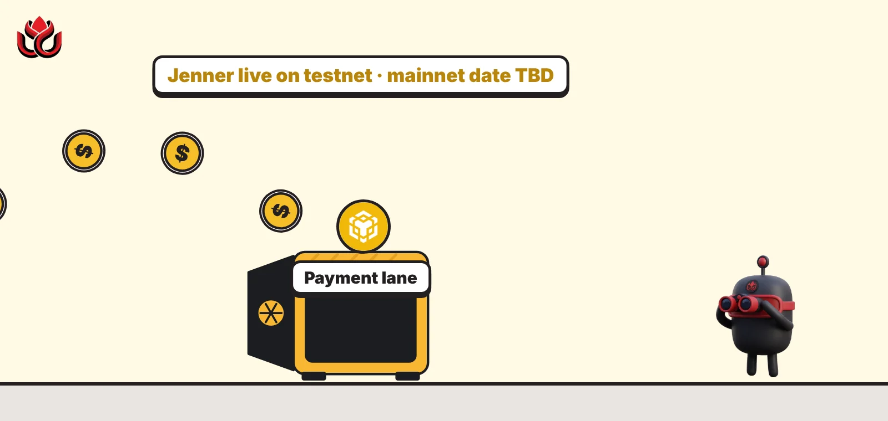
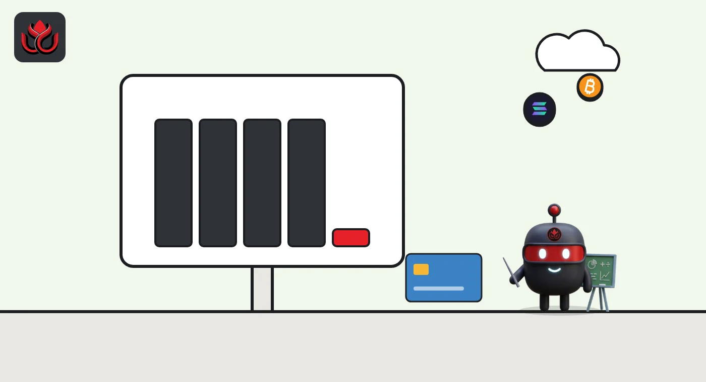
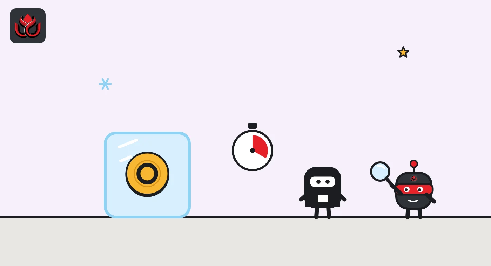

BNB Chain's Jenner hard fork walls off 5% of every block for payments. Who gets in?
Jenner went live on the BSC testnet on October 28, 2026. It reserves block space for payments, adds a native token standard with freeze and seizure powers, and gives smart contracts millisecond time. Mainnet has no date yet.

Key points
- Jenner activated on the BSC testnet on October 28, 2026. BNB Chain says mainnet timing will be announced separately.
- Payment Lane (BEP-703) reserves 5% of each block's gas for eligible payments by default, and governance can raise that to 10%.
- The list of payment contracts starts empty, so stablecoins only qualify after a governance vote adds them.
 What DeepSea's data shows
What DeepSea's data shows
DeepSea's perpetual futures tracker showed BNB as one of the few large assets where tracked traders lean short. Short positions on BNB stood at about $2.57 million against $1.43 million of longs. Across all 150 assets DeepSea tracks, longs made up 86% of open positions ($3.35 billion long vs. $543.87 million short). So positioning on BNB runs against the wider market. These are small sums for an asset of BNB's size, and nothing in the data links them to the hard fork.
Data: DeepSea (desea.io), checked November 1, 2026, 11:25 p.m. ET.
What happened
BNB Chain's Jenner hard fork went live on the BSC testnet on October 28, 2026, according to a BNB Chain post that day. A hard fork is a rule change that every node on the network must adopt. The upgrade guide, published October 22, told all node operators to upgrade before activation.
Mainnet has no date. The guide says confirmed mainnet timing will be announced separately. Testnet operators running the Reth client need reth-bsc v0.1.3. Operators on BSC's Geth client should follow that client's release notes.
Jenner bundles three changes: a reserved lane for payments, a native token standard for regulated assets, and millisecond timestamps for smart contracts.
The client update matters even before activation. BNB Chain says a change in reth-bsc v0.1.3 to how certain RPC calls handle block overrides applies as soon as operators upgrade, even before Jenner switches on. Simulation calls such as eth_call and eth_estimateGas now expect the millisecond part of a timestamp to be passed in a specific field. The release also hardens the block-builder interface introduced by Pasteur, the previous hard fork, with binary block submission over gRPC and builder revocations that persist across restarts. Block builders must also account for the payment reservation when they assemble blocks. BNB Chain says validators reject a block whose gas allocation breaks the rule.
Payment Lane: a reserved share of each block
BEP-703 sets aside 5% of every block's gas limit for qualifying payments. Gas measures how much computing work a transaction uses. Governance can raise the share to a protocol maximum of 10%.
Two kinds of transaction qualify. The first is a nonzero BNB transfer to an ordinary wallet that holds no code. The second is a transaction sent straight to a contract on a governance-managed payment list. That list starts empty. A stablecoin transfer only counts once its token contract has been added, and a payment routed through an unlisted contract does not count even if it ends in a stablecoin transfer.
The rule works one way. General traffic can never use the reserved gas, even when payment demand is low. Payments can use the reserve and also compete for the rest of the block. BNB Chain says unused reserve stays idle on purpose: if producers could hand it to other traffic, they could fill blocks and leave payments out.
Fees still apply. BNB Chain says the lane does not guarantee inclusion in a given block, fixed fees or free transfers. Contract creation, blob transactions and type 0x04 transactions count as general traffic.

CAS20 tokens and millisecond timestamps
BEP-702 introduces CAS20, the Compliant Asset Standard, aimed at stablecoins and tokenized real-world assets. It builds transfer policies, allowlists, blocklists, pausing and separate mint, burn and seizure roles into the protocol. Jenner ships the underlying capability only. Creating CAS20 tokens needs separate activation by a governance-appointed administrator, and BNB Chain says a separate announcement will follow. It also notes the controls do not by themselves make a token legally compliant.
BEP-706 adds a precompile, a built-in contract at address 0x70, that returns the block time in milliseconds. Uses include quote expiry, auction cutoffs and price-feed freshness checks. The standard block.timestamp stays in seconds, and block speed does not change.
Where BSC stands after Pasteur
Jenner follows Pasteur, which went live on August 25, 2026. Pasteur's main change, BEP-675, lets block builders send fully executed blocks so validators no longer replay every transaction before sealing. BNB Chain reported that in the three days to September 1, about 98% of blocks used the new path, and those blocks averaged 28% more gas than the old method.
The same post said validators were raising the gas limit target to 70 million ahead of September 15, with the onchain limit already past 55 million and the network running above 95% utilization. Two builders, 48Club and BlockRazor, produced 97.8% of blocks in that window.
Gas per block at the 99th percentile, by block-building path
million gas
Mainnet data to September 1, 2026. Source: BNB Chain blog

Timeline
Pasteur hard fork live on BSC mainnet
BNB Chain reports 28% more gas per block on the new path
Jenner upgrade guide published
Jenner activates on the BSC testnet
Jenner on BSC mainnet
LC Insight analysis
This section is our reading of the facts above, not a statement of fact.
- We think Payment Lane matters less on day one than it looks. With the contract list empty, only plain BNB transfers qualify, and the stablecoin traffic that makes up most real payments needs governance approval first.
- The real power sits with whoever controls the payment list and the CAS20 administrator role. Watch which stablecoins get listed first, because a listing gives that issuer a protected lane its competitors lack.
- CAS20 puts freeze and seizure tools into the base layer of a major chain. That will appeal to banks and stablecoin issuers, and it will worry users who chose public chains to avoid exactly those controls.
What's next
- A confirmed mainnet date for Jenner
- The first contracts added to the Payment Lane list
- The separate CAS20 launch announcement and who is appointed administrator
- Further gas limit increases toward 80 and 90 million
Disclaimer. This article is based on public information and the sources listed below as of the update time shown. It is for information only and is not investment, legal or tax advice. Figures may change as companies and authorities publish new data.
Sources
- BNB Chain blog, Jenner Hardfork: Changes & Upgrade Guide (October 22, 2026)
- BNB Chain blog, Payment Lane: How BSC Reserves Capacity for Payments (October 28, 2026)
- BNB Chain blog, Post-Pasteur Hard Fork (September 14, 2026)
- BEP-703: Payment Lane (GitHub)
- BEP-675 (GitHub)
- DeepSea, perps long/short, checked November 1, 2026, 11:25 p.m. ET